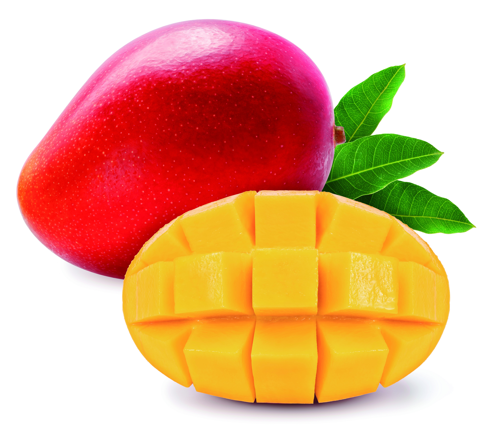

Mango
El mango es una de las frutas más populares que existen en nuestro país, la prueba son los más de 11 kilogramos que un mexicano consume en promedio anualmente. Su dulzor, jugosidad y carnosidad ha conquistado paladares desde su llegada a nuestro país durante la Conquista española.
